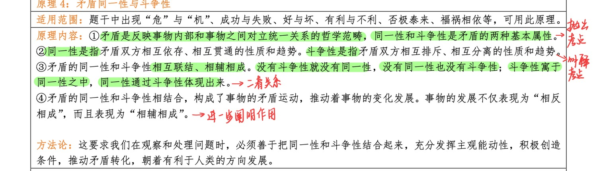
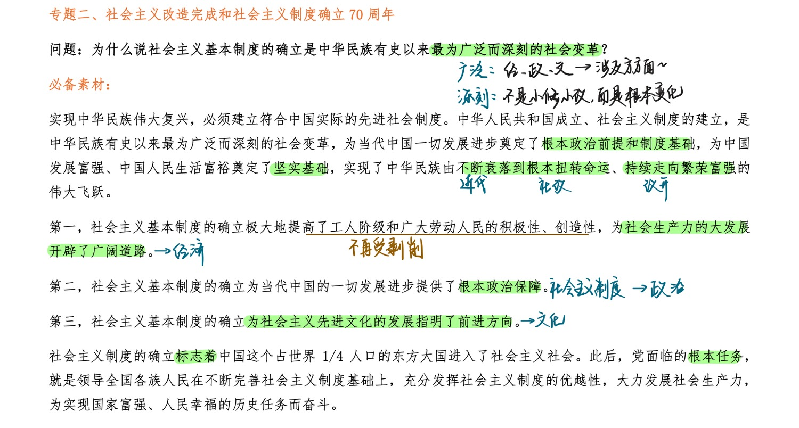

从哪里答：第(1)问先讲经济学含义：商品转化为货币就是“卖”的完成，是私人劳动转化为社会劳动、价值得到社会承认的唯一途径，成则价值实现、败则商品占有者受损，故称“惊险的跳跃”。第(2)问锁定矛盾同一性与斗争性原理：先讲供给与需求相互依存、互为前提（同一性），再讲二者在结构、质量上相互排斥（斗争性），最后落到方法论——在统一中把握对立、在对立中把握统一，以新需求引领新供给、以新供给创造新需求。
结合材料回答问题：材料1商品交换过程是在两个互相对立、互为补充的形态变化中完成的；从商品转化为货币，又从货币转化商品。商品形态变化的两个因素同时就是商品占有者的两种行为，一种是卖，把商品换成货币，一种是买，把货币换成商品，这两种行为的统一就是：为买而卖。商品价值从商品体跳到金体上，像我在别处说过的，是商品的惊险的跳跃。这个跳跃如果不成功，掉坏的不是商品，但一定是商品占有者。摘自《马克思恩格斯选集》第二卷材料2消费是经济增长的重要引擎，是人民对美好生活向往的直接体现。习近平总书记在去年中央经济工作会议上明确了今年经济工作的重点任务，其中包括“适应消费结构变化，扩大优质商品和服务供给”。7月底召开的中共中央政治局会议强调：“要有效扩大国内需求，造应不同群体消费需求扩大优质供给，挖掘服务消费潜力。”以扩大优质商品和服务供给推动消费升级，既是破解供需结构性错配的现实需要，也是满足人民美好生活向往的战略选择。供给和宫求是经济发展的一体两面。推动供需适配，促进生产供给端主动迫应消费施势变化，在质量、结构、效用等方面动态粉准匹配多元消费需求，才能以新需求引领新供给，以新供给创造断需求，进而在二者的动态平衡中顿通国民经济循环，枸建新发展格局。摘编自《人民日报》（2026年8月13日）（1）如何理解从商品转化为货币是“商品的惊险的跡跃”？（2）运用矛盾同一性与斗争性辩证关系的原理，分析“推动供雷适配”“以新需求引领新供给，以新供给创迎新雷求”所体现的供给与雷求的关系。

注：讲义为马原原理汇编，(1)问商品价值形式、私人劳动与社会劳动矛盾部分未单列，答题点据材料与教材自拟；(2)问对应原理4。
从哪里答：本题落在习近平经济思想“五个必须”。第(1)问从以人民为中心和高质量发展切入：投资于物筑牢物质技术基础，投资于人提升人力资本和消费能力，二者统一于人的全面发展。第(2)问讲政府与市场关系：市场在资源配置中起决定性作用，所以要“放得活”；政府弥补市场失灵、维护公平竞争秩序，所以要“管得好”，二者辩证统一于高水平社会主义市场经济体制。
结合材料回答问题：材料1在去年底举行的中央经济工作会议上，习近平总书记总结近年来的实践，提出了做好新形势下经济工作的规律性认识：必须充分挖掘经济潜能，必须坚精政策支持和改革创新并举，必须做到既“放得活”又“管得好”，必须坚精投资于物和授资于人紧密结合，必须以苦练内功来应对外部挑战。这“五个必须”内涵深刻，既是对过去实践经验的科学总结，也是对来来经济社会发展的科学指引，进一步丰富和发展了习近平经济思想。“十五五”时期是基本实现社会主义现代化夯实基础、全面发力的关键时期。今年是“十五五”开局之年，良好的开局是成功的一半。我们要学习领会好、贯彻落实好“五个必须”的重要要求，坚定信心、攻坚克难，奋力实现全年经济社会发展目标任务，硫保“十五五”开好局、起好步。摘编自《人民日报》（2026年1月13日）材料2坚持投资于物和投资于人紧密结合，积极扩大有效投资。强化“十五五”规划纲要109项重大工程与“六张网”规划建设协同推进，组织做好六网协同场景示范。用好超长期特别国债资金，加快新型政策性金融工具资金投放使用，加大对社会民生、科技创新、产业升级，安全韧性等领城补短板、锻长板支持力度。完善民营企业参与重大项目长效机制，完善基础设施和公共服务设施布局，高质量推进城市更新行动。摘编自《人民日报》（2026年10月21日）材料3习近平总书记指出：“要讲究辩证法，处理好活力和秩序的关系”。党的二十届四中全会《建议》提出：“形成既‘放得活’又‘管得好’的经济秩序”。2025年底召开的中央经济工作会议提出：“必须做到既‘放得活’又‘管得好’”。从以前的“管得住”到现在的“管得好”，一字之变，意蕴深远。这是我们党经济治理理念的又一次跃升，是对更好发挥政府作用提出的更高要求。摘编自《人民日报》（2026年1月12日）（1）为什么“必须坚持投资于物和投资于人紧密结合”？（2）如何理解“必须做到既‘放得活’又‘管得好’”？
(1)人是生产力中最活跃的因素，最具决定性的力量。坚持投资于物和投资于人紧密结合，是中国共产党对做好新形势下经济工作规律性认识的深化，彰显了现代化的本质是人的现代化的价值追求。第一，投资于人是时代发展的要求。第二，投资于人是经济与社会发展更好融合的基本手段。第三，投资于人是应对全球竞争的现实选择。第四，投资于人是促进人的全面发展和共同富裕的重要路径。
(2)做到既“放得活”又“管得好”,就是要正确处理政府和市场关系这一经济体制改革的核心问题，让市场“无形之手”与政府“有形之手”各负其责，持续增强高质量发展动力和活力。
统筹好“放得活”和“管得好”的关系，是提高经济治理能力的必然要求；坚持有效市场和有为政府相结合是构建高水平社会主义市场经济体制的题中应有之义，也是确保我国经济发展不断取得成功的关键因素。“放”的目的是破除影响生产力发展的体制机制障碍，充分激发各类经营主体活力。“管”针对的是破坏市场秩序、扰乱市场预期等行为，本质要求是建设法治经济。检验是否做到既“放得活”又“管得好”,关键看是否有效推动经济高质量发展。
注：分析题讲义未覆盖（讲义仅含马原、史纲、思修三科，无新思想时政内容），答题点据课程与材料自拟。
从哪里答：第(1)问从工业化要求、个体农业手工业的局限、资本主义工商业与国营经济的矛盾、国营经济领导地位与人民民主专政政权四个角度说明“历史必然性”，落脚到1956年改造基本完成即历史证明。第(2)问用讲义专题二的“最为广泛而深刻的社会变革”＋经济、政治、文化、民族与统一战线各条意义展开，最后收到“根本政治前提和制度基础”。
结合材料回答同题：材料1一九五二年，党中央按服毛泽东同志的建议，提出了过波时期的总路线：要在一个相当长的时期内，逐步实现国家的社会主义工业化，并逐步实现国家对农业、对手工业和对资本主义工商业的社会主义改造。这个总路线反映了历史的必然性。历史证明，党提出的过波时期总路线是完全正项的。摘自《关于建国以来党的若干历史问题的决议》材料2一九五六年，我国基本上完成对生产资料私有制的社会主义改造，基本上实现生产资料公有制和按劳分配，建立起社会主义经济制度。党领导确立人民代表大会制度、中国共产党领导的多党合作和政治协商制度、民族区域自治制度， 人民当家作主提供了制度保证。党领导实现和现回了全国各族人民的大团结，形成和发展各民族平等互助的社会主义民族关系，实现和巩固全国工人、农民、知识分子和其他各阶层人民的大团结，加强和扩大了广泛统一战线。社会主义制度的建立，为我国一切进步和发展奠定了重要基础。摘自《中共中央关于党的百年奋斗重大成就和历史经验的决议》（1）为什么说过渡时期总路线“反映了历史的必然性”？（2）说明社会主义基本制度碗立的伟大意义。

注：(1)问总路线“历史必然性”讲义未单列，答题点据教材与材料自拟；(2)问对应专题二必背素材。
从哪里答：第(1)问先界定公共生活及其开放性、透明性、交往对象复杂性，指出网络空间是公共生活的重要场域，再讲公共秩序对公共生活正常运行、公共利益与社会稳定的作用。第(2)问讲道德与法律的关系，法治是治国理政的基本方式，落到依法管网治网、压实平台责任、多元主体共治。
结合材料回答问题：近期，一些网络“小作文”频繁引发热议。相关内容主打“控诉”“爆料”，在社交平台扩散速度极快，有的甚至声量惊人，干扰正常的公共讨论秩序。值得警惕的是，一些写手深谙网络传播规律，撰写“小作文”的出发点就是博眼球、年取私利，因而真相与理性自然被漠视。这类“小作文”一旦成为网络焦点，不仅真假难辦、滋生戾气，侵蚀人与人之间的基本信任，也占用公众注意力资源，无益于构建良性奥论生态。“小作文”往往还自带“奥论审判”基因。信息一经发布，伤害便已发生，被指控者的名誉可能在短时间内遭受严重损害，而维权和救济之路却艰难漫长，甚至无法彻底消除影响。如果任由这种精心编排的叙事影响奥论，不仅对当事人不公，也会消解法治精神和公共理性。逼制“小作文”乱象，绝不能仅靠道德呼吁，必须将法治思维和法治方式贯穿于管网治网全过程。互联网不是法外之地，随着法律法规不断完善，网络内容发布者的法律责任更趋明晰。越来越多的案例证明，虚构事实、恶意引流、操纵奥论等行为，今后只会受到依法处置。营造清朗网络空间，符合互联网用户的根本利益，也是社会共识。但这一目标无法自动实现，需要凝聚多元主体的共治智慧与力量。从强化穿透式监管、压实平台责任，到互联网平台建立更高效的内容审核、谣言标注和投诉响应机制，再到自媒体和网络大V 自觉校准公共讨论基调，以理性、客观的态度对冲偏激情绪，引导公众回归事实本身••共同将法治精神内化为行为准则，才能以“规则之治“不断优化网络奥论生态。摘编自《人民日报》（2026年9月15日）1）结合公共生活与公共秩序，说明为什么要雪造清明网络空间。（2）“绝不能仅靠道德呼吁，必须将法治思维和法治方式贯穿于管明治网全过程”对我们营造清朗网络空间有何启示？
扬考答案(1)网络空向是虚拟的，但运用网络空间的主体是现实的。网络空间是亿万民众共同的精神家园。因此，网络空闻也是公共领城。需要公共秩序。有序的公共生活是社会生产活动的重要基随，是提高杜会成员生活质量的基本保障，更是社会文明的重要标志。网络空同乌烟气、生态聪化，不符合人民利益。网络空间不是法外之地。依法治理网络空间，是维护社会和谐稳定、继护公民合法权益、促进网络空间健康有序发展的必然之举和迫切需要。
(2)法冶和德怡，是冶国理政不可或族的两种方式，忽视其中任何一个，都将难以实现国家的长治久交。只有让法治和德治共同发揶作用，才能使法律与道德相辅相成，法治与德治相得益彰，做到法安天下，德阀人心。
思想道德和法律都是调节人们思想行为、协调人际关系、推护社会秩序的重要手段。网络空同的治理既要重视发挥道德的教化作用，提高全社会文明程度，为网络空间的治理创造良好环境；又要把道穗要求贯彻到法治建设中，以法治承载道德理念，坚持依法洽网和以德询阿相结合，以时代新风塑造和净化网络空间，共建阿上美好精神家园。
注：分析题讲义未覆盖（思修模板仅含人生态度、人生价值、精神、理想信念、自由发挥五类，无公共生活与法治思维），答题点据课程与材料自拟。
从哪里答：第(1)问分三层：东京审判的法理性质（清算侵略罪行、判定侵略战争违反国际法）、国际法贡献（侵略战争为国际犯罪、个人承担战争责任）、历史定论（铁证与判决不容否定，否认即为军国主义翻案）。第(2)问把“敌国条款”定位为反法西斯战争胜利成果的制度化安排，讲其预防和震慑作用，再联系日本右翼否认历史、图谋删除条款的现实针对性。
结合材料回答问题：材料11945年8月15日，日本宣布无条件投降。这虽然结束了侵略战争，但真正从法理上为这场战争画上句号的，正是80年前的东京审判——以法律和正义之名，对日本军国主义侵略罪行进行的彻底清算，构筑起战后和平秩序的重要法理基石。1946年5月3日，依据日本无条件投降相关安排与《远东国际军事法庭宪章》，远东国际军事法庭在日本东京正式开庭。这是人类历史上规模空前的国际刑事审判，汇集11国司法力量，历时两年半，累计开庭818次，传唤出庭证人419名，采信各类证据4336件，形成近5万页英文庭审记录。法庭凭借海量铁证与严谨法理，依法判定日本军国主义发动侵略战争、严重违反国际法，全面揭露其在亚洲多国犯下的滔天罪行，判处东条英机等25名甲级战犯相应刑罚。东京审判对塑造战后国际秩序的价值至今无可替代。东京审判的历史定论不容否定。摘编自《人民日报》（2026年8月13日）材料2在中国外交部9月23日的例行记者会上，有记者提问：当地时间2026年9月22日，日本首相高市早苗在联合国大会发言称，日本作为和平国家坚持专守防卫政策，为国际社会的和平与繁荣贡献力量，将推进“无核武器世界”，呼吁删除《联合国宪章》中“敌国条款”。请问中方对此有何评论？中国外交部发言人对此表示，相比日方怎么说，国际社会更关注日方怎么做。今年是联合国成立81周年，也是东京审判开庭80周年。《联合国宪章》中的“敌国条款”是重要制度安排，时至今日仍然具有重要现实意义。我们敦促日方以史为鉴、深刻反省，以实际行动取信于亚洲邻国和国际社会。摘编自中国新闻网（2026年9月23日）（1）如何理解“东京审判对塑造战后国际秩序的价值至今无可替代”？（为什么说“东京审判的历史定论不容否定”？）（2） 为什么说《联合国宪章》中的“敌国条款”“时至今日仍然具有重要现实意义”？（注：所谓“敌国条款”’，是指《联合国宪章》第53条、第77条及第107条相关条文。条文作出明确规定：德意日等法西斯或军国主义国家的任何一国有再次实施侵略政策的任何步骤，中法英美等联合国创始会员国有权对其直接实施军事行动，无须安理会授权。）
(1)东京审判以法律形式确认，日本军国主义发动侵略战争、实施战争暴行必须承担不可椎卸的责任。东京审判是《开罗宣盲》《被茨坦公告〉规定的落地实施，反映战胜国与受害者集体意志，践行《联合国宪章》宗旨与原则，牢牢守护了世界反法西斯战争的胜利成果。
接受东京审判判决、是战后日本重返国际社会的重要法理前提。然而，时至今日，日本右翼势力仍处心积虑为侵略历史翻案，图谋通过否定东京审判历史定论，挣脱战后国际秩序约束，为“再军事化”铺路。
东京审判确认的，不只是若干战犯的刑事责任，更是对侵略战争不可美化、战争罪行不可否认、历史正义不可颠倒的捍卫。东京审判对塑造战后国际秩序的价值至今无可替代，东京审判的历史定论不容否定。
(2)《联合国宪章》中的“敌国条款”是重要制度安排，旨在防止法西斯主义、军国主义再
度对国际和平与安全构成戚胁，为捍卫战后国际秩序提供了重要制度保障。
当年，日本以承认军国主义罪行、接受《联合国宪章》全部内容为前提加人联合国。战后日本“和平国家”理念是建立在深刻反省历史、彻底同军国主义切割的基础之上。但事实上，日本现政权不仅否认侵略历史、美化战争罪行，还持续强军扩武，加速“再军事化”,公然挑战战后国际秩序，已经成为威胁地区和平稳定的突出因素。
2026年是联合国成立81周年，也是东京审判开庭80周年。维护战后国际秩序、捍卫二战胜利成果、维护地区和平稳定，是国际社会的共同责任。《联合国宪章》中的“敌国条款”,“时至今日仍然具有重要现实意义”。
注：分析题讲义未覆盖（史纲讲义仅长征胜利90周年、社会主义改造70周年两个专题），答题点据课程与材料自拟。